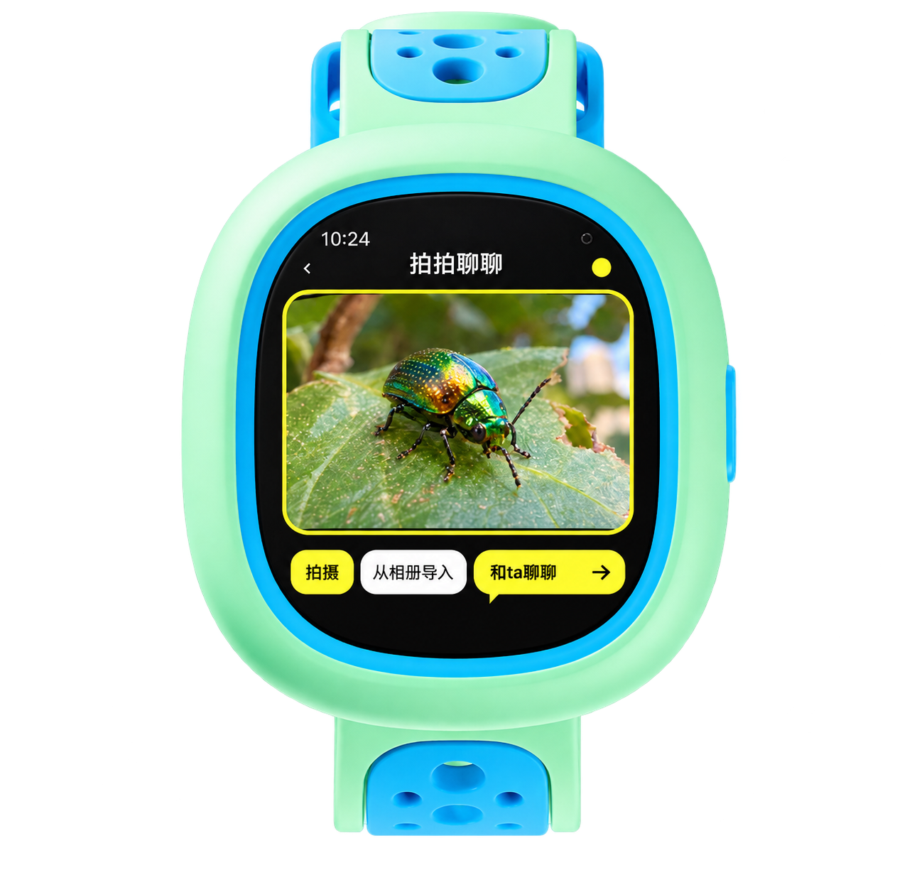

01
自由探索
拍照、聊天，让昆虫、画、冰箱、信号塔和便利店从日常里开口。
进入自由探索 →not another lesson
小小世界把认知、情绪和朋友之间的关系，放进一次次真实的相遇里。孩子问世界，也学着听见自己；朋友分享发现，再一起回到那个地方。
three scenes
what can enter the archive
watch-first, family-ready
手表负责短暂、清楚、行动导向的互动；手机负责设置、承接和长期回顾。每一次数字相遇，都应该有一个现实的下一步。
